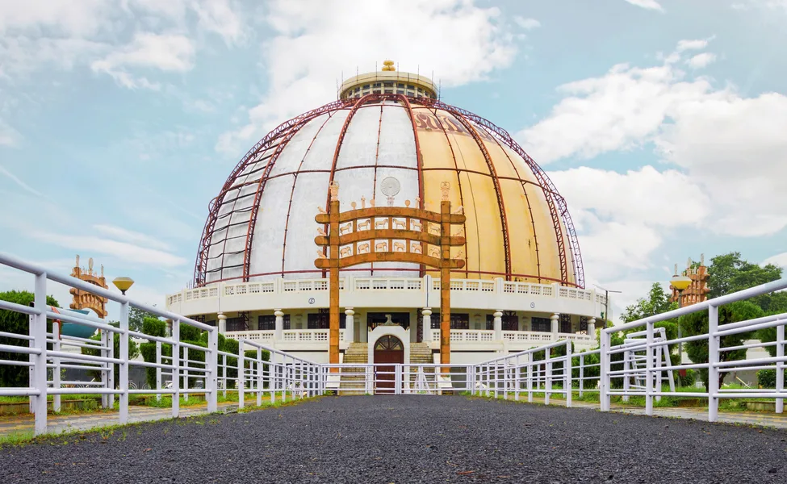

Reputed to be one of the topmost Smart Cities of India, Nagpur is known by many names – 'The Orange
City', 'The Winter Capital of Maharashtra' and the 'Tiger Capital of India'. While it is not very hard
to guess that Nagpur is famous for its oranges and thus, earned the tag of being the 'Orange City', you
might be wondering why Nagpur is known as Maharashtra's 'Winter Capital' and India's 'Tiger Capital'.
Read on to explore the story behind Nagpur being rechristened with these interesting names.
Way back in history, Nagpur was the capital city of the Central & Berar Province for
almost a century. However, after the State Reorganization took place in 1956, Nagpur and
Vidarbha regions became part of the newly created State of Maharashtra. With this,
Nagpur lost the status that it enjoyed of being the capital of Maharashtra. This led to
the culmination of a pact between leaders. This was called the Nagpur Pact. According to
the pact, Nagpur is the second capital of Maharashtra. Therefore, the winter sessions of
the legislature and legislative council of Maharashtra take place in Nagpur.

Nagpur connects many Tiger Reserves in India such as the Tadoba-Andhari Tiger Reserve Pench
National Park, Nagzira-Navegaon Tiger Reserve, Melghat Tiger Reserve, Bor Tiger Reserve and
Umred Karhandla Wildlife Sanctuary. Therefore, it is named the 'Tiger Capital of India'. This is
hardly intriguing since Maharashtra holds the 3rd highest place with respect to the population
of tigers. Nagpur's dense forest areas cover around a whopping 37,251 sq. km. The region is rich
in wild fauna and flora. Innumerable foreign and domestic tourists throng the tiger reserves of
Nagpur.
Thus, with its rich historical and geographical background, Nagpur has earned the reputation of being the 'Winter Capital' and the 'Tiger Capital'.